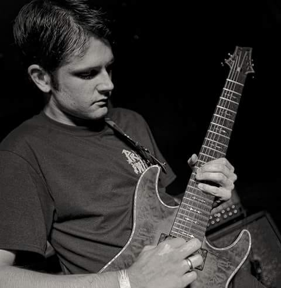

MEAT THE BAND
LOUIE HAZARD: Lead Guitar and Backup Vocals. They called us walking corpses Unholy living dead They had to lock us up Put us in their British hell Make sure your face is clean now Can't have no dirty dead All the corpses here are clean, boy All the Yanks in British hell I don't want to be here in your London Dungeon I don't want to be here in your British hell Ain't no mystery why I'm in misery in Hell Here's hoping you're swell
DENISE HAZARD: Lead Vocals & Rhythm Guitar.They called us walking corpses Unholy living dead They had to lock us up Put us in their British hell I don't want to be here in your London Dungeon I don't want to be here in your British hell Ain't no mystery why I'm in misery in Hell Here's hoping you're swell Make sure your face is clean now Can't have no dirty dead All the corpses here are clean, boy All the Yanks in British hell I don't want to be here in your London Dungeon I don't want to be here in your British hell Ain't no mystery why I'm in misery in Hell
ALEX STEFFENS: Bassist. I am iron man Has he lost his mind? Can he see or is he blind? Can he walk at all Or if he moves will he fall? Is he alive or dead? Has he thoughts within his head? We'll just pass him there Why should we even care? He was turned to steel In the great magnetic field Where he traveled time For the future of mankind Nobody wants him He just stares at the world
NATHAN CHRISTENSEN: Drummer. Planning his vengeance That he will soon unfold Now the time is here For iron man to spread fear Vengeance from the grave Kills the people he once saved Nobody wants him They just turn their heads Nobody helps him Now he has his revenge Heavy boots of lead Fills his victims full of dread Running as fast as they can Iron man lives again